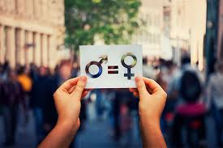

La violencia es el uso intencional de la fuerza o el abuso de poder para dominar a alguien o imponer algo. Se puede manifestar a través de comportamientos que involucran: Si bien el concepto de violencia es claro, el modo en que se puede manifestar varía según cada cultura. Además, a medida que la humanidad evoluciona, es necesario volver a analizar las diferentes modalidades en las que se manifiesta la violencia desde la ética, la moral o el derecho. Esto permite visibilizar aspectos de la vida cotidiana que resultan hechos de violencia y abuso, pero que no suelen ser reconocidos como tales por formar parte de las costumbres de una cultura determinada (por ejemplo, la esclavitud fue común y legal durante cientos de años hasta su abolición a partir del siglo XIX, primero en Europa y luego en el continente americano).

Violencia física. Es la forma más evidente de violencia o abuso, que puede ocasionar daños físicos y riesgo de vida, aunque no siempre deja huellas visibles (por ejemplo, si te tiran del pelo o te arrojan la comida en la cara, eso es un acto de violencia física). Se manifiesta de varios modos como castigos corporales, permanencia forzada en lugares encerrados, inmovilización, etc.
Violencia psicológica. Es una de las formas de violencia más difíciles de detectar, que puede ocasionar daños a nivel psicológico o emocional. Se manifiesta cuando una o más personas agreden de manera verbal e intencional a otra persona. A veces la agresión no es directa y evidente, sino que comienza como algo sutil y se prolonga a lo largo del tiempo hasta que resulta una fuerte agresión psicológica.
Violencia sexual. Es una de las formas de violencia donde la mayoría de las víctimas son mujeres y los agresores son hombres. Abarca desde comentarios e insinuaciones no deseados hasta las acciones del acto sexual. Se manifiesta con actos agresivos mediante el uso de la fuerza física, psíquica o moral que reducen a la víctima a condiciones de inferioridad para llevar a cabo una conducta sexual contra su voluntad.
Violencia económica y patrimonial. Es una de las formas de violencia que afecta los bienes de la propia víctima y, sostenida en el tiempo, deriva en otros tipos de violencia como la física o la sexual. Se manifiesta con la transformación, sustracción, destrucción o restricción de los objetos, documentos, bienes y valores de la víctima, impidiendo que trabaje o realice actividades de manera independiente a fin de controlar y amenazar su integridad.
Violencia simbólica. Es una de las formas de violencia más disimulada que afecta a una gran cantidad de personas en simultáneo. Se manifiesta de manera indirecta en la sociedad, a través de estrategias que imponen estereotipos y estructuras mentales, que son reforzados por la repetición y terminan siendo naturalizarlos. Por ejemplo, el parámetro adoptado socialmente de delgadez y cuerpo perfecto casi irreal conlleva a severos trastornos psicológicos y físicos entre la mayoría de la población que no puede alcanzar esa apariencia.